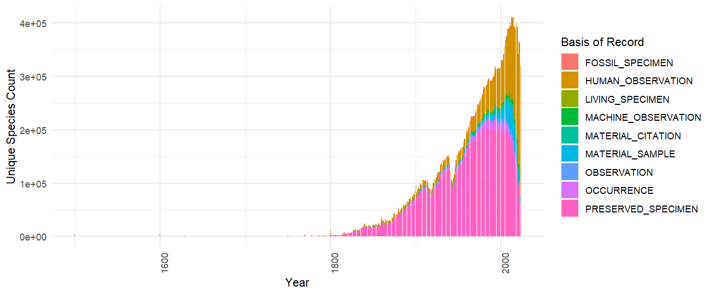

Update: SQL download taxonomy columns now use COL XR by default. If your existing queries use GBIF Backbone keys, see recent changes to SQL downloads.
If your download can be formulated using the traditional predicate downloads, it is usually going to be faster to use regular downloads.
The experimental Occurrence SQL Download API allows users to query GBIF occurrences using SQL. In contrast to the Predicate Download API, the SQL API allows selection of the columns of interest and generation of summary views of GBIF data.
SQL downloads, like predicate downloads, require you to have a GBIF user account.
SQL Download Workflow
The first step is to prepare your query. There is only one table available for querying, the occurrence table. You can check if the query is ok using query validation. You can also check what fields are available in the occurrence table using this endpoint https://api.gbif.org/v1/occurrence/download/describe/sql. There are +400 columns available.
SELECT datasetKey, countryCode, COUNT(*) FROM occurrence WHERE continent = 'EUROPE' GROUP BY datasetKey, countryCode
This query should be included in a json POST request, and saved to a file named, for example, query.json.
{
"sendNotification": true,
"notificationAddresses": [
"userEmail@example.org"
],
"format": "SQL_TSV_ZIP",
"sql": "SELECT datasetKey, countryCode, COUNT(*) FROM occurrence WHERE continent = 'EUROPE' GROUP BY datasetKey, countryCode"
}
The request should then be sent as a POST request to the endpoint https://api.gbif.org/v2/occurrence/download/request
curl --include --user YOUR_GBIF_USERNAME:YOUR_PASSWORD --header "Content-Type: application/json" --data @query.json https://api.gbif.org/v1/occurrence/download/request
The download will appear in your GBIF user account.
SQL examples - Multi-dimension Counts
One common query that is difficult to do with the traditional downloads interface is to get a occurrence counts of species by multiple dimensions. This query gets a table with countries and species with the most occurrences published to GBIF without having to download a large table and do the aggregation locally.
SELECT publishingcountry, specieskey, COUNT(*) as occurrence_count
FROM occurrence
WHERE publishingcountry IS NOT NULL AND specieskey IS NOT NULL
GROUP BY publishingcountry, specieskey
ORDER BY occurrence_count DESC;
| publishingcountry | specieskey | occurrence_count |
|---|---|---|
| US | 2495347 | 23467566 |
| US | 2490384 | 21442333 |
| US | 9510564 | 20975419 |
| US | 2482507 | 20396610 |
| US | 2482593 | 17855746 |
| US | 9761484 | 17814101 |
SQL examples - Time Series
Another interesting query would be to get a times series of number of species “collected/observed” over years, grouped by basis of record.
SELECT
basisOfRecord,
"year",
COUNT(DISTINCT speciesKey) AS unique_species_count
FROM
occurrence
GROUP BY
basisOfRecord,
"year";
Note that "year" needs to be double quoted as it is a reserve word. This is true also for other reserve words like "month", "day" etc. This graphic shows the rising influence of Human Observations in GBIF mediated occurrences data.

SQL examples - Grid Functions
Making a global map of unique species counts per grid cell is a common task, but because it requires a spatial join with the chosen spatial grid, it can be difficult to do without working with a large amount occurrence records.
For this reason GBIF’s SQL downloads provide support for a few pre-defined grid functions. These functions will return a grid cell code for each occurrence, which can then be used to aggregate or plot the data.
- EEA Reference Grid, GBIF_EEARGCode
- Military Grid Reference System, GBIF_MGRSCode
- Quarter degree cell code, GBIF_QDGCCode
- ISEA3H Grid cell code, GBIF_ISEA3HCode
Below is example of working with the Military Grid Reference System (MGRS) grid. This example will return a table with unique species counts per grid cell and an attached grid code, which in this case is mgrs.
SELECT
GBIF_MGRSCode(
100000,
decimalLatitude,
decimalLongitude,
0
) AS mgrs,
COUNT(DISTINCT speciesKey) AS unique_species_count
FROM
occurrence
GROUP BY
mgrs
The grid code can then be used to join with a shapefile or geojson file that contains the grid cells.
This image uses shapefiles from this repository.
The sql grid functions were originally designed to be used with creating species occurrence cubes. Therefore a randomization parameter was supported COALESCE(coordinateUncertaintyInMeters, 0). This should be set to 0 if you want to use the grid functions with no randomization.
SELECT
GBIF_EEARGCode(
10000,
decimalLatitude,
decimalLongitude,
0
) AS cellcode,
COUNT(DISTINCT speciesKey) AS unique_species_count
FROM
occurrence
GROUP BY
cellcode
The EEA reference grid example can be found here.
https://sdi.eea.europa.eu/data/93315b78-089d-43a5-ac76-b3df627b2e4cf
.jpg)
Supported SQL
Only SELECT queries are supported, and only queries against a single table named occurrence. JOIN queries and sub-queries are not allowed. Selecting * is also not allowed. One must explicitly select the columns needed.
GROUP BY queries are supported, as are basic SQL window functions (OVER and PARTITION BY). ORDER BY is supported.
Most common SQL operators and functions are supported, such as AND, OR, NOT, IS NULL, RAND(), ROUND(…), LOWER(…), etc. Case is ignored by the GBIF SQL parser, and all column names are returned as lowercase.
When not to use
If you need only commonly used occurrence columns and simple filters, most of the time you can use the regular download interface instead of the SQL interface, and it will be faster.
Keep in mind that if you only need species counts for one dimension, then facet queries are usually going to be a much faster option (although you won’t receive a DOI). Some examples below:
http://api.gbif.org/v1/occurrence/search?facet=speciesKey&country=US
http://api.gbif.org/v1/occurrence/search?facet=speciesKey&country=US&year=1800,1900
http://api.gbif.org/v1/occurrence/search?facet=speciesKey&country=US&year=1800,1900&basisOfRecord=HUMAN_OBSERVATION
http://api.gbif.org/v1/occurrence/search?facet=country&facetLimit=200
rgbif example
SQL downloads is also supported by rgbif by using occ_download_sql(). Please see this article for the easiest way get started with SQL downloads. Remember to set up your GBIF credentials.
library(rgbif)
occ_download_sql("SELECT datasetKey, countryCode, COUNT(*) FROM occurrence WHERE continent = 'EUROPE' GROUP BY datasetKey, countryCode")